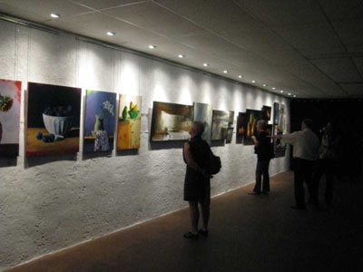
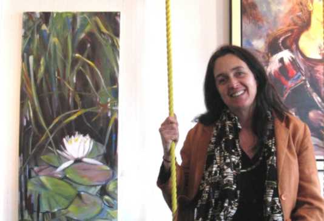

La Galerie du Chapiteau était située dans les halls d'entrée des Chapiteaux Saint-Sauveur et Bromont.
Elle a opéré de 2004 à 2009 sous la direction de Johanne Martel

Sur la photo vous pouvez reconnaître :
Carole Bonneau, Jean-Claude Latour, Renée Dion, Marie-Josée Moreau, Pieter et Denise Mayer, Kathleen Cloutier, Johanne Martel et Martine Cyr
CAROLE BONNEAU
Inspirée par les grands maîtres, Carole joue les contrastes de lumières et chaque toile est une création riche en énergie et en couleurs. Son médium favori est l'acrylique, mais elle utilise également le pastel sec. De style figuratif, son travail est axé sur les natures mortes où elle puise son inspiration. Un thème qu'elle affectionne : la poire, porteuse de tous les styles de personnalité. Lorsqu'elle peint, elle se donne pour mission de représenter cette beauté qui l'inspire et l'habite. Son but ultime est de la magnifier dans l'œil qui la regarde.
Luministe, Carole Bonneau travaille beaucoup les effets de lumière… pour
souligner la tendresse d'une joue, la nostalgie d'un sourire ou la
dualité de l'être. Coloriste, elle apporte une attention minutieuse au
choix des couleurs et aux sentiments qu'elles invoquent. En regardant
ses tableaux, on engage un dialogue inconscient avec le sujet qui nous
regarde, nous interpelle, nous renvoie notre propre humanité.
Plongez dans l'univers de Carole et, l'espace d'un instant, vos sens
seront en alerte : happés, sublimés, touchés… dans ce dialogue engagé
avec l'œuvre.
L'artiste s'efface pour ne laisser que l'essence.
KATHLEEN CLOUTIER
D’aussi loin qu’elle se
souvient Kathleen Cloutier, a toujours été attiré par toutes les
formes d’artet d’esthétisme en général. C’est cependant lors de ses
études en design de mode qu’elle découvre une passion pour
l’aquarelle. Elle ne cesse plus de peindre depuis ce temps.
À partir de ce moment-là, elle se perfectionne dans divers ateliers
de peinture en passant pas l’aquarelle et ensuite l’acrylique.
Portée par cette même curiosité, elle touchera au vitrail.
C’est toutefois l’acrylique qui lui donne accès à des avenues encore
insoupçonnées qui lui servent de véhicule à sa créativité.
Peintre autodidacte après 15 ans de carrière en design de mode,
Kathleen Cloutier sa vrai vocation à plein temps
Martine Cyr est née aux Îles de la Madeleine,
archipel baignant dans l'immensité du Saint-Laurent.
Son intérêt pour les arts s'est développé, dès son jeune âge, au sein
d'une famille d'artistes multidisciplinaires. À 16 ans, elle quitte le
nid familial pour entreprendre des études en graphisme et en art à
Montréal. Pendant quelques années, elle partage son temps entre le
travail comme peintre scénique et sa passion pour la peinture.
Aujourd'hui, Martine vous accueille dans son atelier de Val-David avec
sa spontanéité des plus chaleureuse. Elle se fait plaisir en partageant
avec vous son univers créatif et passionné
.EXPOSITION PERMANENTE Galerie Le Luxart
66, Saint-Paul OuestMontréal
« Femmes, une célébration de la féminité »
La Villa des arts Liliane Bruneau Saint-Agathe des Monts
Gagnante du premier prix du public 2008
« 1001 Visages » Bain Mathieu, Montréal
RENÉE DION
Après 30 ans de graphisme et
d'illustration publicitaires, Renée Dion a décidé de se consacrer à
temps plein à l'aquarelle. Toute son expérience d'illustratrice fut un
atout précieux sur le plan technique.
Ses sujets de prédilection sont tirés de la nature : fleurs, forêts,
rivières, paysages de campagne… Son style se distingue particulièrement
par son audace dans les couleurs et sa créativité.
La recherche tient une grande place dans son travail d'artiste et de
professeur d'aquarelle : expérimentation de papiers variés, usage
d'accessoires multiples afin de créer des textures réalistes, exécution
d'aquarelle sur toile…
Elle multiplie les expériences afin d'acquérir une meilleure maîtrise de
son medium et développer un style unique!
PIEIER ET DENISE MAYER
La VIE a sa façon bien à elle de nous remettre sur
le ''bon'' sentier. Denise, Montréalaise d'origine, a rencontré son
américain à Mexico en 1976. Ce fut le coup de foudre et ils travaillent
ensemble depuis 33 ans.
Pieter était réalisateur/caméraman et Denise devint du jour au lendemain
sa productrice tout en gérant leur propre maison de production. En 1982,
ils déménagèrent au Canada et en 1991 s'installèrent dans les
Laurentides.
Au tout début, par nécessité, leur jardin s'est transformé en toile de
fond et avec la découverte de cette merveilleuse technologie, la
pellicule est aux oubliettes. Pieter captait tout ce qui lui tombait
sous l'œil, fleurs, bestioles, brindilles, jusqu'à ce qu'il puisse
marcher au-delà du jardin. Denise le suivait de prêt empruntant son
nouveau jouet et une ancienne passion revivra.
Ils décrivent leur dernière démarche comme une aventure à saveur
spirituelle et enivrante. Partager leur passion est un modus vivendi et
se réjouissent à l'idée que leur caméra digitale engendre dans
l'imaginaire une magie visuelle..
Amoureuse de formes et de couleurs, d'ombre et de
lumière, Marie-Josée Moreau est constamment en quête de moments
inattendus qui la surprennent par leur beauté lumineuse ou par leur
poésie cachée. Des moments qui la portent à créer et à vouloir partager
l'élan de création avec d'autres, par ses toiles et par le partage du
quotidien vu et aimé dans sa simplicité.
Peindre est un besoin essentiel que Marie-Josée entretient avec rigueur
et méthode. Sa passion des couleurs et de la lumière a pris bien des
détours : de commis à infographiste à illustratrice et enfin à mère de
famille, voilà autant d'inspirations pour transformer la blancheur d'un
canevas. Un rêve ne nous quitte jamais, ne se dissout pas dans le
quotidien : sa vie est couleur, tonalité, texture, espace et forme.

DOMINIQUE NORMAND
D'oeuvre en oeuvre, la
démarche artistique de Dominique Normand est guidée par la volonté
de mettre en lumière la splendeur et l'effervescence du monde qui
l'entoure. Par son art, elle vise à créer un opéra pour les yeux.
Elle recherche les thèmes qui apaisent la soif du coeur.
Une imagerie ponctuée d'une gestuelle fluide,
habile et fougueuse lui procure la satisfaction du charme de
l'apparente facilité. Un jeu d'arcures harmonieuses et organiques,
des taches suggestives, et le jet de lignes peintes spontanées
contribuent à rendre le sujet saisissable et familier. Une palette
de couleurs sage et apaisante domine et procure une impression de
territoire connu. Dominique Normand éprouve un grand plaisir à
marier différents médiums, tous les moyens sont bons pour atteindre
l'objectif prévu. Elle privilégie les effets vibrants de l'esquisse
peinte et le caractère dominant de la spatule à peindre.
Ses explorations sont un prétexte pour entrer en relation avec le
sujet choisi. Elle entreprend de l'apprivoiser tout en me permettant
d'être prise par son rayonnement. Chaque coup de pinceau est une
réponse à sa volonté de naître.

LE VERNISSAGE
Conception Johanne Martel www.magadam.com .